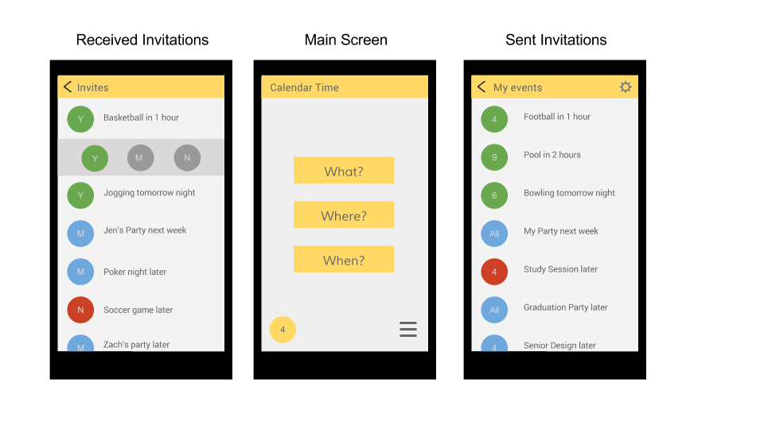

Academics
I'm a senior at Auburn University graduating Spring 2015. I'm working toward a Bachelor of Science in Mechanical Engineering with a Minor in Computer Science.
Employment
I have work experience in both Mechanical Engineering and software development. I'm currently employed part-time by SAIC as a web and mobile app developer.
Interests
My passion is for great UX design, but my technical interests are wide-ranging and include web design, app development, and mobile technology. In my spare time, I also enjoy various outdoor sports, reading, writing, and of course, Auburn Athletics.
Samples
RP Media is a Huntsville, Alabama based advertising/consulting company. The image above is a screenshot of some web design/prototype work that I completed for the company.
Russell Hospital
Russell Medical Center is located in Alexander City, Alabama. Along with five other students, I am currently participating in a senior design project that requires the development an HVAC control system for the medical center's facilities. As the web interface team lead, I was tasked with designing a functional interface to display data from Russell's various air handlers, boilers, chillers, etc. The screenshot above is of the system summary tab, which displays maintenance, reminders, and summaries. In addition to developing the web interface, I have also worked extensively with the bacPypes Python library and Flask to develop PLC and server-side software, respectively.
Calendar Time Calendar Time is a fun and whimsical social calendar app. The idea is rather simple; to replace pesky, hard-to-follow group invite messages with a simple and ephemeral social calendar. The app is still under development and the above image displays an interface mock up for the app, which I'm expecting to complete in 2015.